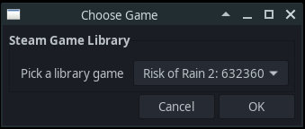

Proton/Wine
If you are playing a Windows game on an Unix system (Linux/Mac/SteamOS/etc.) the game will have to run through a compatibility layer (Proton, or its predecessor Wine) which at the moment will likely prevent BepInEx from starting. This is because UnityDoorstop relies on dll files inside the game directory being loaded instead of system dlls, but under Proton/Wine this behavior does not happen by default. To make BepInEx work it's necessary to configure this DLL forwarding to work correctly.
We strongly recommend to use Proton, but it is not an absolute requirement.
Note
Instructions on using BepInEx with proton are based on a guide from R2Wiki
1. Open winecfg for the target game
With proton the easiest way to do so is via
protontricks
(or similarly with winetricks which is not covered here).
Open the terminal and type
protontricks --gui
Note
If you have a Steam Deck, the protontricks --gui command most likely won't work. Instead, you need to install protontricks via discovery store, and then launch it via the Steam search bar. Launching it via discovery store won't work.
If you managed to make this guide work on Steam Deck please let us know of any differences, or consider submitting an edit!
Next, select the game you want to configure

Next, in winetricks menu select Select default wineprefix option and press OK:

Finally, select Run winecfg and click OK:

This will open winecfg.
2. Configure proxy to run
BepInEx relies on winhttp.dll proxy DLL to inject itself into Unity games.
On wine the proxy should be configured manually.
In winecfg, select Libraries tab. Under New override for library dropbox,
select winhttp and Click add:

Finally click Apply and you're done. Running the game should now run BepInEx.